Happy Thanksgiving everyone! Recently I have been doing a few 2 player play tests with each of the characters to see how strong they are relative to each-other. While I initially planned to do a match up between each possible pair of characters, I quickly found that the new Essay cards too strongly buffed a club strategy, and some of the new character mechanics seemed a bit too strong. Anyway, I was able to get through 3 playtests with the Bookworm against the three other characters, which sheds some insight into their relative strengths.
| Bookworm | Jock | ||
| Grades | 53 | Grades | 29 |
| Integrity | 0 | Integrity | 7 |
| Rec | 10 | Rec | 17 |
| FUN | 8 | FUN | 0 |
| Clubs | 1 | Clubs | 39 |
| Essays | 19 | Essays | 9 |
| Detentions | 0 | Detentions | 0 |
| Summer Programs | 3 | Summer Programs | 0 |
| Stud Gov President | 0 | Stud Gov President | 3 |
| Lie on the Resume | 0 | Lie on the Resume | 5 |
| Total: | 94 | Total: | 119 |
| Bookworm | Couch Potato | ||
| Grades | 53 | Grades | 36 |
| Integrity | 4 | Integrity | 0 |
| Rec | 16 | Rec | 8 |
| FUN | 0 | FUN | 8 |
| Clubs | 3 | Clubs | 12 |
| Essays | 8 | Essays | 31 |
| Detentions | 0 | Detentions | -2 |
| Summer Programs | 3 | Summer Programs | 0 |
| Stud Gov President | 3 | Stud Gov President | 0 |
| Lie on the Resume | 0 | Lie on the Resume | 0 |
| Total: | 90 | Total: | 93 |
| Bookworm | Teacher’s Pet | ||
| Grades | 44 | Grades | 15 |
| Integrity | 1 | Integrity | 9 |
| Rec | 0 | Rec | 36 |
| FUN | 10 | FUN | 0 |
| Clubs | 23 | Clubs | 1 |
| Essays | 42 | Essays | 1 |
| Detentions | 0 | Detentions | 0 |
| Summer Programs | 3 | Summer Programs | 0 |
| Stud Gov President | 3 | Stud Gov President | 0 |
| Lie on the Resume | 5 | Lie on the Resume | 0 |
| Total: | 131 | Total: | 62 |
A few notes about the play tests. In the first two games, Bookworm went for a fairly straightforward straight A strategy. In the third game, Bookworm came into Sophomore year with Popular giving them 12 Friends. In addition, Bookworm picked up Stud Gov and gained 13 friends off of Letting Others Copy (On a separate note, I’m nerfing letting others copy to giving a max of 10 Friends as I feel it is a bit too strong at the moment). Even though I ended up only correcting one sophomore class, it paid off in the end as I got an incredibly lucky essay streak.
Jock was stupidly broken as I was able to correct my classes and get friends for it, which meant I could basically get A’s and also have a strong club economy. Interestingly, Jock’s ability was really annoying to play against since it could easily wipe out 3-4 friends in a turn, but was easy to play around by just not having friends. I didn’t like this interaction though as I will elaborate on later. Couch Potato was fun to play around with again, but I only ended up getting 2 breakdowns. I’m thinking that this number should ideally be higher since it’s a lot of fun to breakdown. Teacher’s Pet was a disaster and I think it’s because I played it terribly. I went for a pure teacher rec strategy and basically only chatted with teachers. I figured out that this was really easy to play against by spending all of my teacher influence as soon as I got it. This resulted in not having any recs, but also didn’t matter that much. One thing that was common throughout the three playtests was how powerful essays became. What surprised me the most was how changing 2 Essay cards, and adding in 4 additional essays, had such a significant the balance of the game. The Essays that I used while playtesting the characters are shown here:
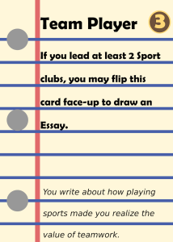 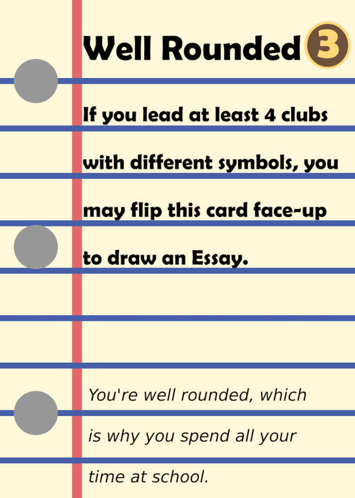 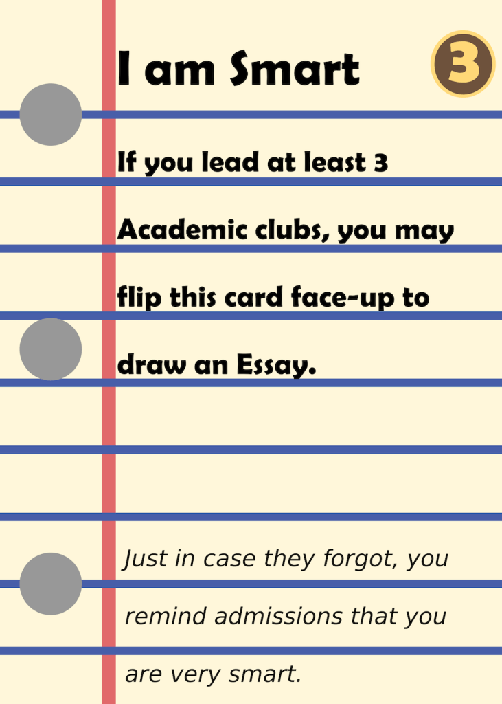 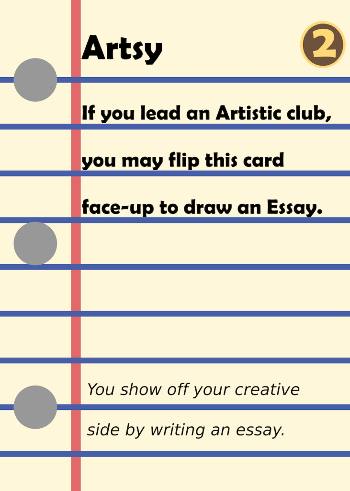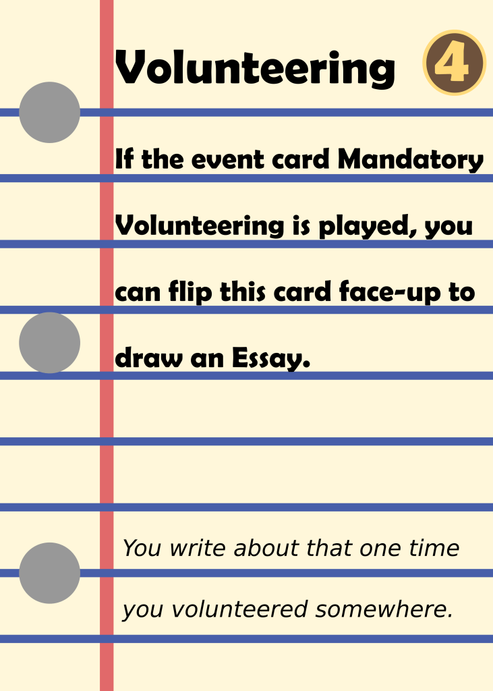 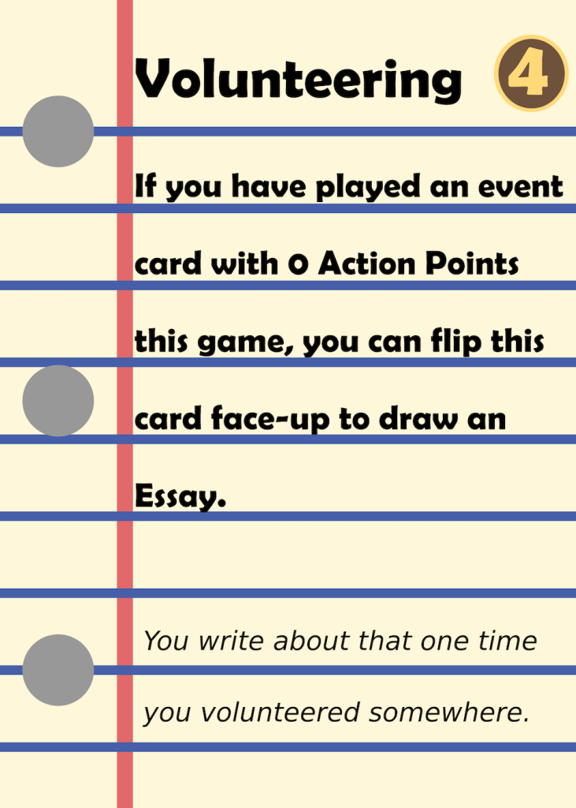
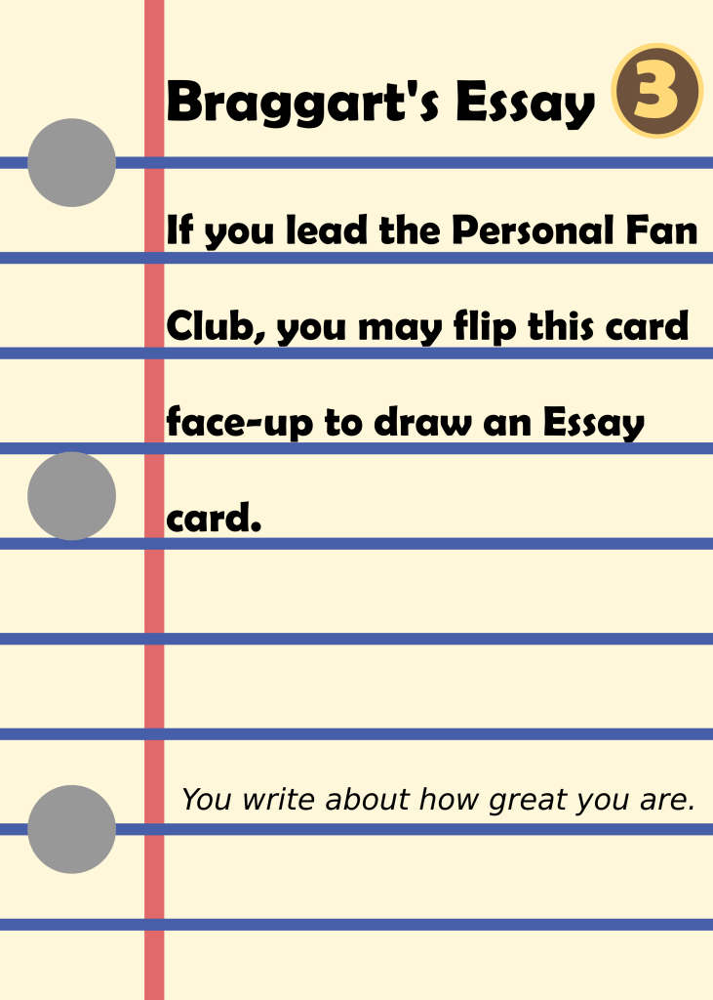 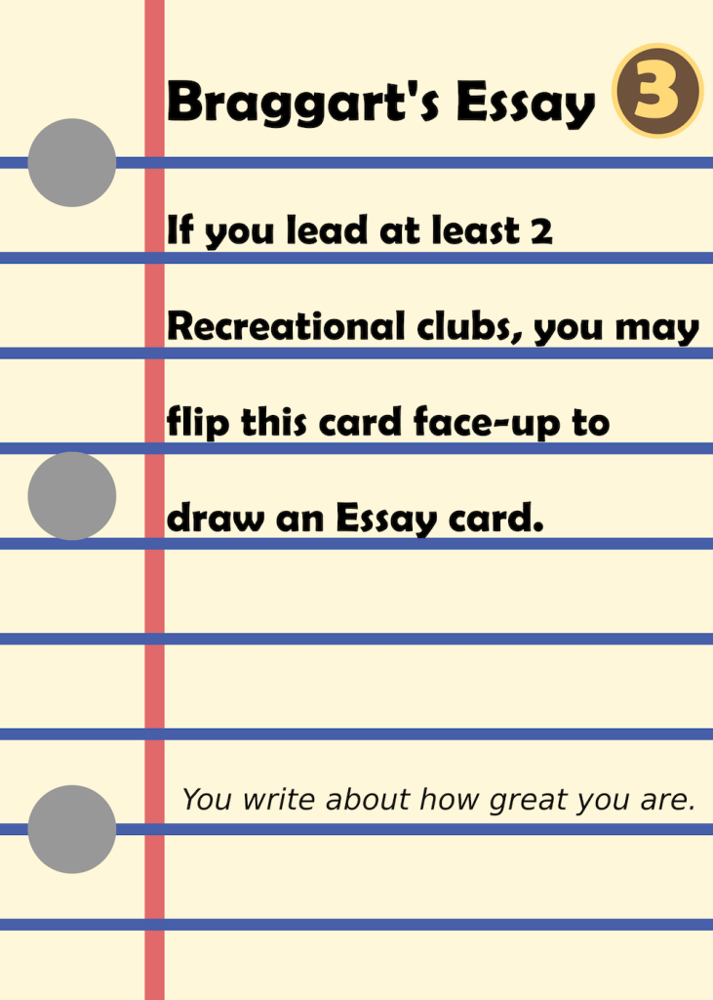
Balance changes:
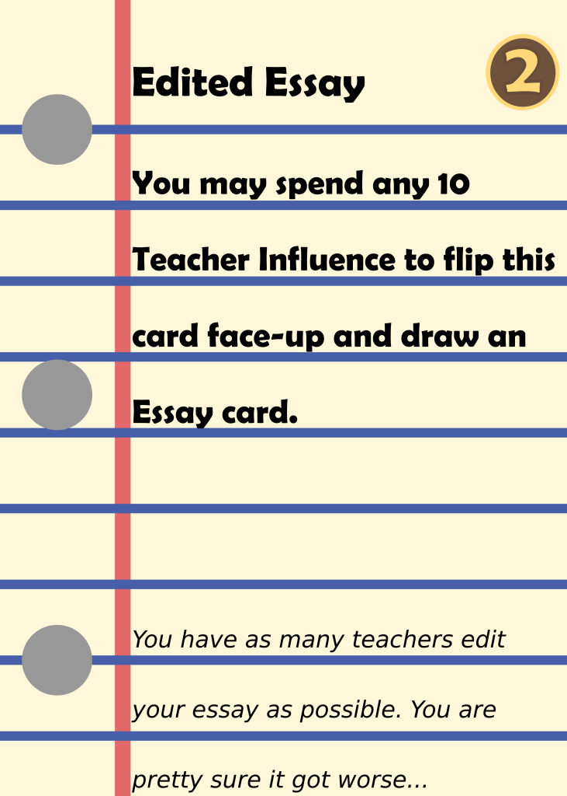 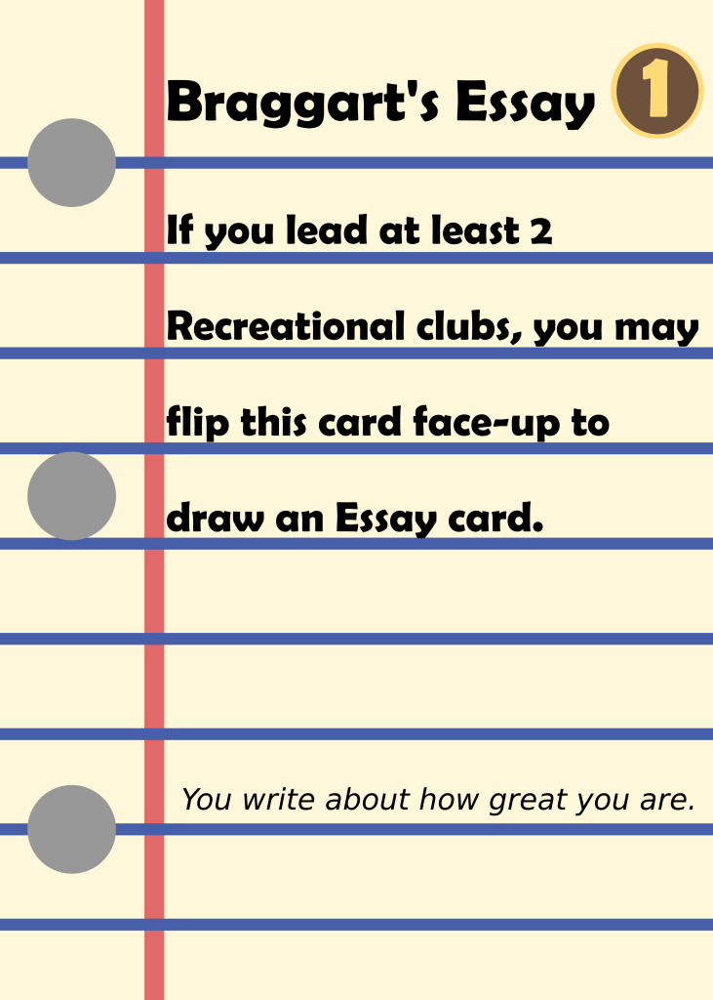 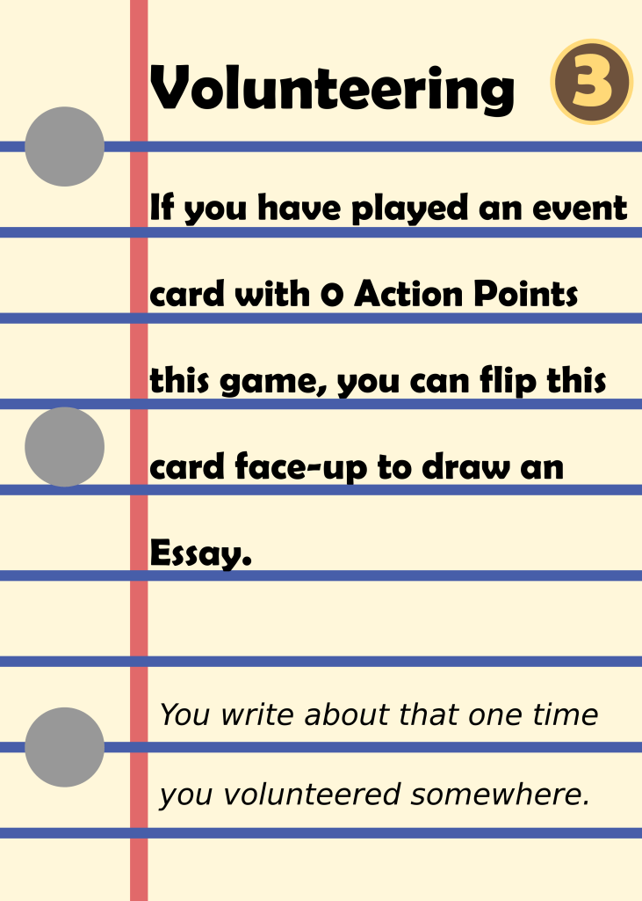 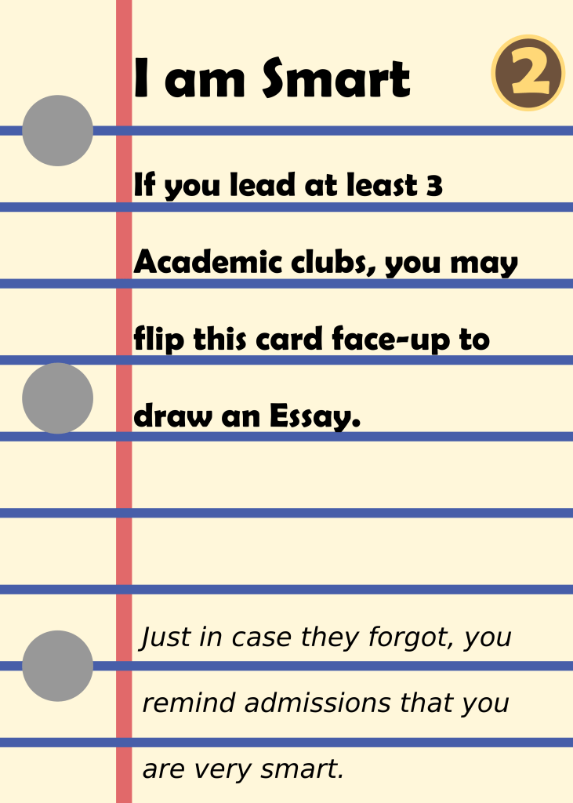 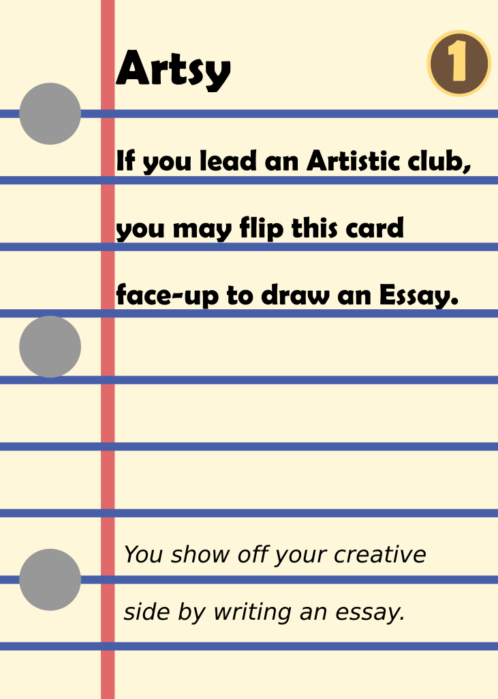 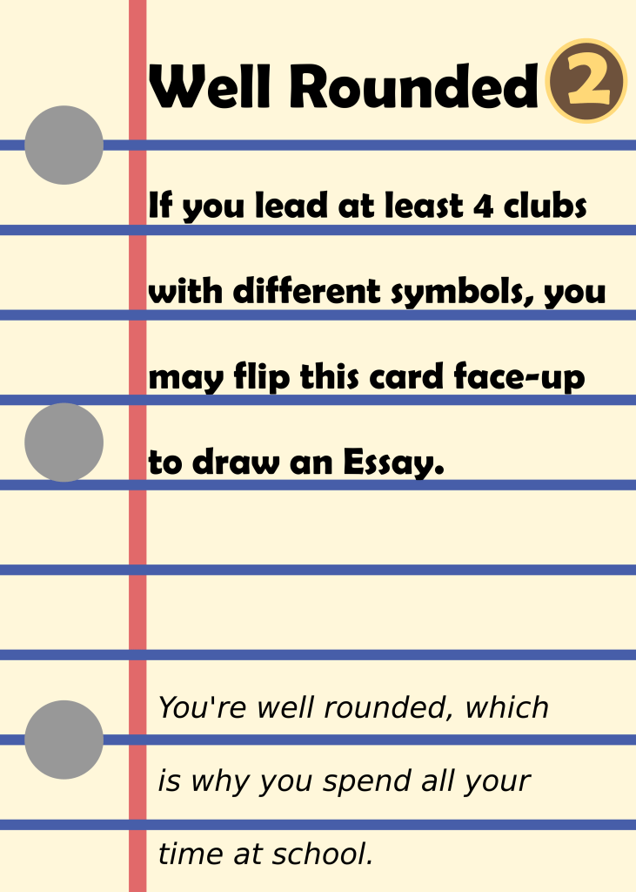 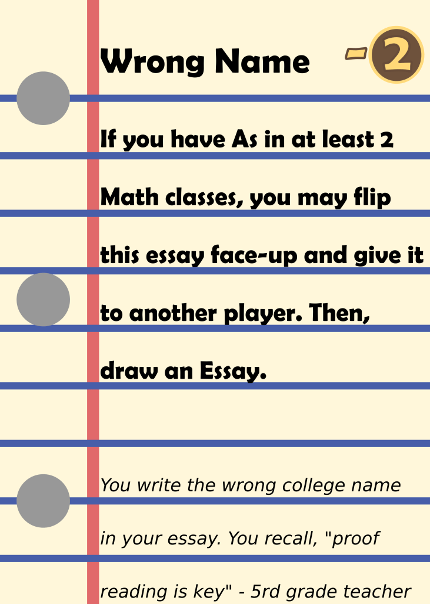These changes are all simply reductions in the Resume Point value of some of the essays that got buffed, including Edited Essay, which was a relatively newer addition. The only exception is Wrong Name, which has simply been adjusted from 2 English classes to 2 Math classes. This is due to the flipping condition being too similar to “A Poem”. Based on stereotypes of mathy people, I think it also goes well thematically.
Changes to character cards:
Jock: Re-done schedule. Stats only become friends from correcting TOP classes, rather than all classes. Special Socialize ability removed. Sport RP Bonus removed.
Teacher’s Pet: Special Chat ability changed to +3 Teacher Influence, +1 Stress. Gains the ability to freely redistribute their Teacher Influence during their turn.
Couch Potato: Reduced Happiness stress penalties rather than no happiness penalties (+1,+3,+5).
A few notes about these changes. I noticed that the modified actions of Jock and Teacher’s Pet were simply not very fun. It encouraged the immediate spending of Friends and Teacher Influence respectively, and were too oppressive in a two-player game. On the other hand, Bookworm’s special ability was very interesting to play around with and changed the dynamic a bit. Thus, I decided to give something similar to Teacher’s Pet. While I thought Jock could use a similar special power, I wanted to keep him a bit more unique and really liked his Stats to Friends ability. I thus nerfed it a bit by making it only applicable to TOP classes, which I think creates more interesting decision making. Couch Potato was buffed a bit by making it easier for them to get stress and break down.
What do you think of these balance changes? Let me know in the comments below! Thanks for reading and make sure to subscribe if you enjoy this content!